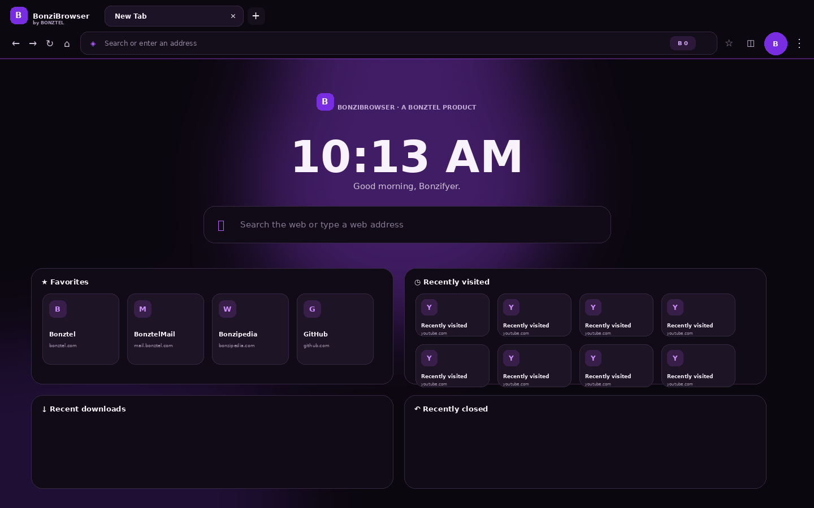
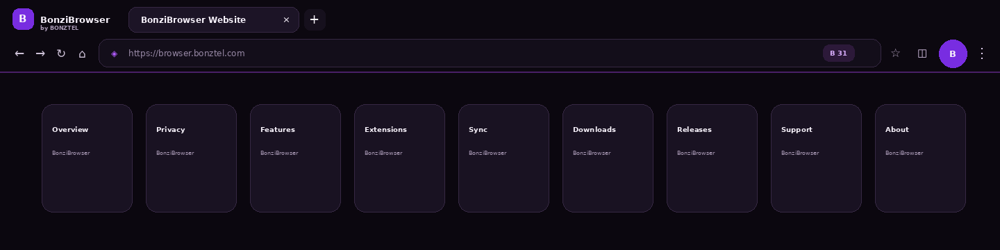
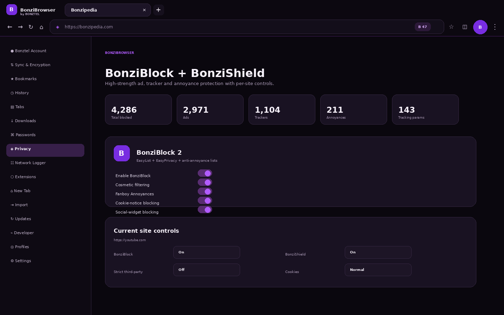
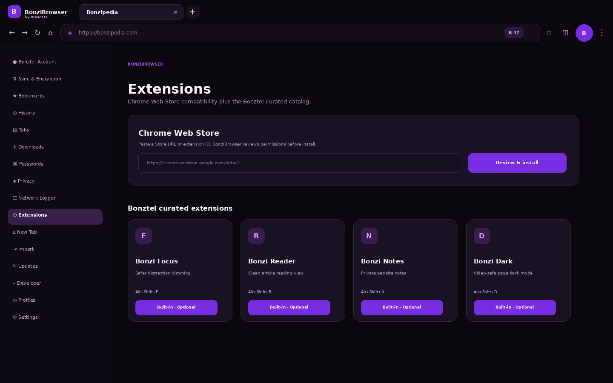
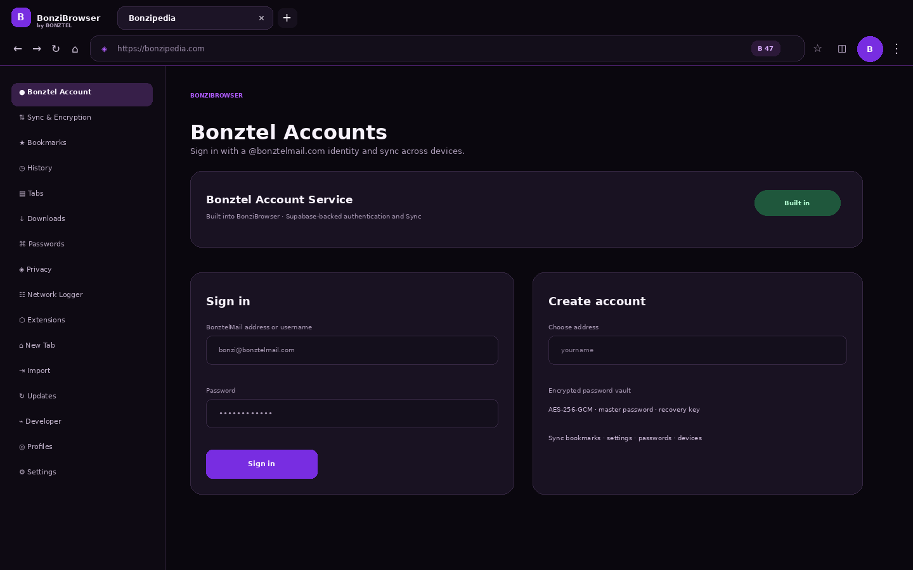

Modern tabs
Pinned tabs, sleeping tabs, tab groups, recently closed tabs, vertical tabs and incognito.
 BonziBrowserDownload 4.1.4Windows download
BonziBrowserDownload 4.1.4Windows downloadFast Chromium browsing with BonziBlock, BonziShield, encrypted Sync, and the Bonztel ecosystem built in.
BonziBrowser is a desktop app. Download it on a Windows 10/11 PC.
BonziBlock handles ads, cosmetic filters and annoyances. BonziShield adds tracker protection, URL cleanup, HTTPS upgrades and per-site privacy controls.
Current 4.1.4 interface captures based on the shipping BonziBrowser UI.





Core browser tools, privacy, accounts and the Bonztel ecosystem are integrated instead of bolted on.
Pinned tabs, sleeping tabs, tab groups, recently closed tabs, vertical tabs and incognito.
Pause/resume, speed, ETA, history, duplicate-safe filenames and risky-download warnings.
Autofill, generator, weak/reused/breach warnings and an encrypted Sync vault.
Bonztel-curated extensions plus supported Chrome Web Store packages with permission review.
Tabs and the address bar hide during HTML fullscreen video and restore automatically.
Local/private page tools with an optional OpenAI-compatible endpoint mode.
Use a Bonztel identity to sync supported browser data across devices while keeping password Sync end-to-end encrypted.
A high-level feature comparison. Chrome and Edge have their own strengths and ecosystems; this table focuses on features BonziBrowser integrates by default.
| Feature | BonziBrowser 4.1.4 | Chrome | Edge |
|---|---|---|---|
| Built-in ad blocking | BonziBlock | Extension required | Extension required |
| Built-in tracker controls | BonziShield | Privacy controls | Tracking prevention |
| Bonztel ecosystem shortcuts | Built in | — | — |
| Curated local extension store | Built in | Chrome Web Store | Edge Add-ons / Chrome |
| Encrypted password Sync vault | Master password + recovery key | Google Password Manager | Microsoft account sync |
| Per-site BonziBlock/Shield controls | Built in | Extension dependent | Extension dependent |
| Customization | Themes, New Tab, profiles | Built-in + extensions | Built-in + extensions |
Yes. BonziBrowser 4.1.4 uses Electron 44.2.0 and its bundled Chromium engine while adding Bonztel’s own UI, privacy, Sync and extension layers.
It can install compatible Chromium extensions and has a Chrome Web Store package flow, but Electron supports only a subset of Chrome extension APIs, so compatibility varies.
Chrome Web Store extension-detail pages caused renderer crashes in the Electron build, so BonziBrowser opens the Store in your system browser and installs supported packages through its own Extensions panel.
Yes. BonziBlock 2 and BonziShield are integrated into BonziBrowser and have per-site controls, filter lists, cosmetic filtering, element picker and a local request logger.
Local browser/profile data is stored in BonziBrowser’s Electron user-data directory under your Windows AppData profile. Sync is optional.
BonziBrowser includes updater infrastructure for Stable/Beta/Dev channels. Production automatic updates require hosted release metadata/artifacts and proper signing infrastructure.
Download for Windows, or read the release notes first.